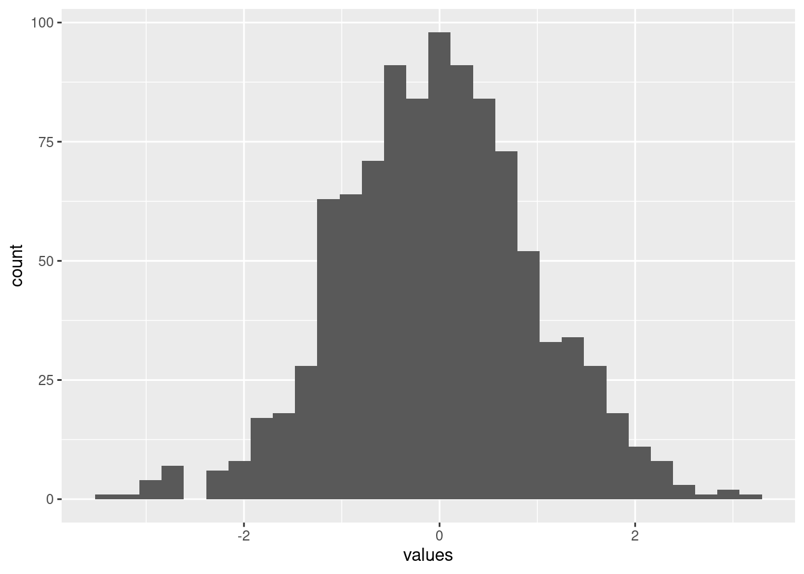
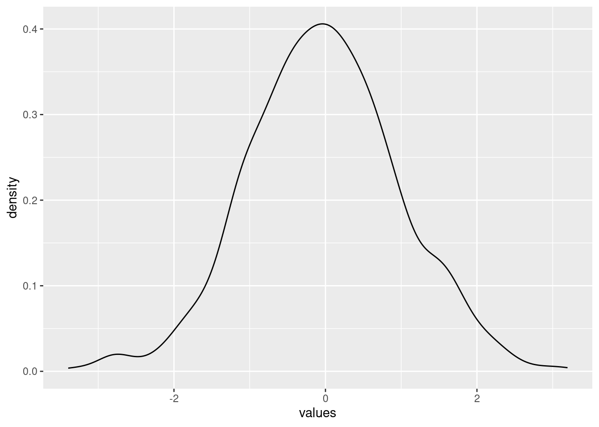

Examples of finding the mode of a univeriate distribution in R and Python.
R
python
kernel-density
pdf
probability-density
programming
Author
Robert M Flight
Published
July 19, 2018
TL; DR
If you have a unimodal distribution of values, you can use R’s density or Scipy’s gaussian_kde to create density estimates of the data, and then take the maxima of the density estimate to get the mode. See below for actual examples in R and Python.
Mode in R
First, lets do this in R. Need some values to work with.
`stat_bin()` using `bins = 30`. Pick better value with `binwidth`.

ggplot(data_df, aes(x = values)) +geom_density()

We can do a kernel density, which will return an object with a bunch of peices. One of these is y, which is the actual density value for each value of x that was used! So we can find the mode by querying x for the maxima in y!
<string>:1: MatplotlibDeprecationWarning: The close_event function was deprecated in Matplotlib 3.6 and will be removed two minor releases later. Use callbacks.process('close_event', CloseEvent(...)) instead.
![]()